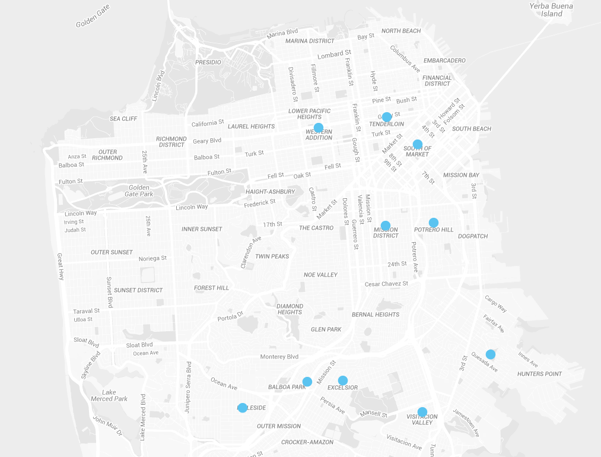

Preventing Street Violence, A Neighborhood at a Time
Through street outreach, crisis response, and community mobilization activities, the Street Violence Intervention Program (SVIP) makes San Francisco safer and healthier for all its residents.
Street Violence Defined
Street violence refers to any severe conflict related to street association rivalries and territories.

The Mayor’s Office of Violence Prevention Services and the Department of Public Health oversee the Street Violence Intervention Program (SVIP). The Street Violence Intervention Program aims to reduce street violence and homicides through street-level prevention and intervention. The SVIP focuses especially on young people. SVIP outreach workers engage in three main activities: street outreach, crisis response, and community mobilization. You can read more about each of these activities below.
Street Outreach
The SVIP works in the following San Francisco neighborhoods: the Tenderloin, Western Addition, SOMA, Bayview, Potrero Hill, Mission, Excelsior, Visitacion Valley, Alemany and Lakeview. SVIP outreach workers develop strong relationships within their assigned communities, particularly with young people and their families.
Through regular canvassing, outreach workers defuse potentially violent situations in schools and neighborhoods. Outreach workers also visit detention centers such as the Youth Guidance Center and the Hall of Justice. SVIP outreach workers use their relationships and influence with youth to prevent and intervene in incidents that could lead to serious street violence.
What is Canvassing?
When outreach workers “canvas” a neighborhood, that means that they directly interact with individuals in that neighborhood—starting conversations and building relationships. Canvassing also involves being systemic—making sure to visit different places and to visit them regularly.
SVIP outreach workers also build relationships with communities through food distribution. SVIP outreach workers take food donations from Food Runners, package them into individual meals, and hand-deliver them to individuals and families in their assigned communities.
Since they know the communities well, the outreach workers are able to deliver meals to areas that are hard to reach for other community-based organizations. Deliveries also provide a chance for outreach workers to engage with individuals and families.
Crisis Response
When a homicide or shooting occurs, SVIP workers support first responders. SVIP workers act as liasons between first responders and community members. They use their expertise to de-escalate the situation and prevent further violence. SVIP workers also provide support and guidance to families, friends, and witnesses of crime.
Community Mobilization
SVIP workers organize workshops and recreation activities to bring people from their neighborhood together. These events provide an opportunity for community members to discuss and plan how to change their community for the better. Events can also reduce tensions for people the neighborhood.
Various community and faith-based organizations organize peaceful protests, rallies, or demonstrations in communities covered by SVIP workers. When those events happen, SVIP outreach workers help them proceed peacefully by acting as liaisons with city officials.
Through street outreach, crisis response, and community mobilization activities the SVIP makes San Francisco safer and healthier for all its residents.
Further Reading
These reports include details and numbers about SVIP's activities and communities served.
Monthly Reports
- December 2015
- November 2015
- October 2015
- September 2015
- August 2015
- July 2015
- June 2015
- May 2015
- April 2015
- March 2015
- February 2015
- January 2015